Oil geopolitical risk: off the March peak, still high. Iacoviello's oil-related AI-GPR read 752 in September, below the March 2026 record of 1,844 but still far above the 2003 Iraq-war and 2022 Ukraine spikes. Source: https://www.matteoiacoviello.com/ai_gpr.html
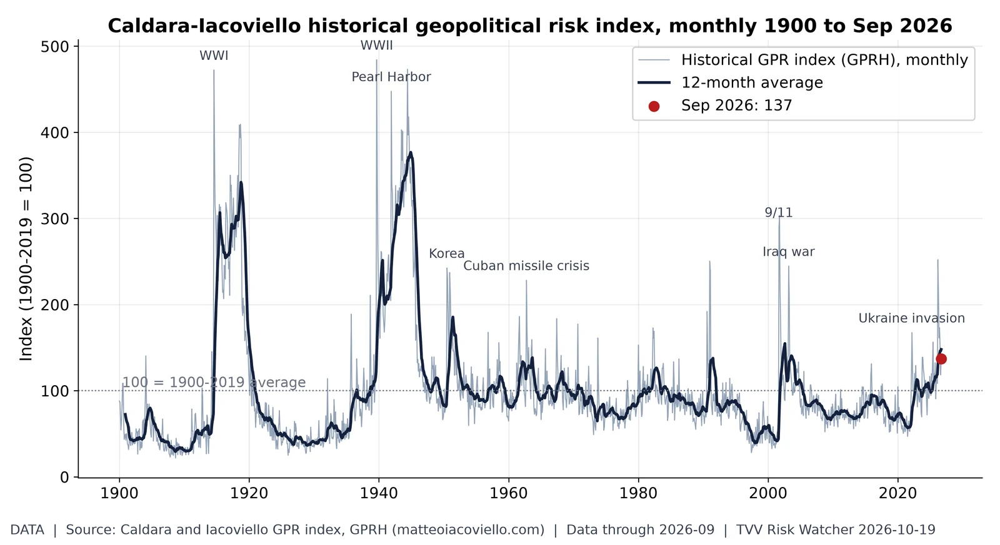
126 years of geopolitical risk. The historical GPR index read 137 in September 2026 (12-month average 148; 100 = 1900-2019 average), above 86% of months since 1900 but far below the world-war peaks. Source: https://www.matteoiacoviello.com/gpr.htm
Who is killing civilians. UCDP's preliminary data record 5,660 civilians killed by non-state armed groups in Jan-Aug 2026 (525 in August); Islamic State groups account for 1,458, and Nigeria (1,669) and DR Congo (1,300) lead by country. Source: https://ucdp.uu.se/downloads/
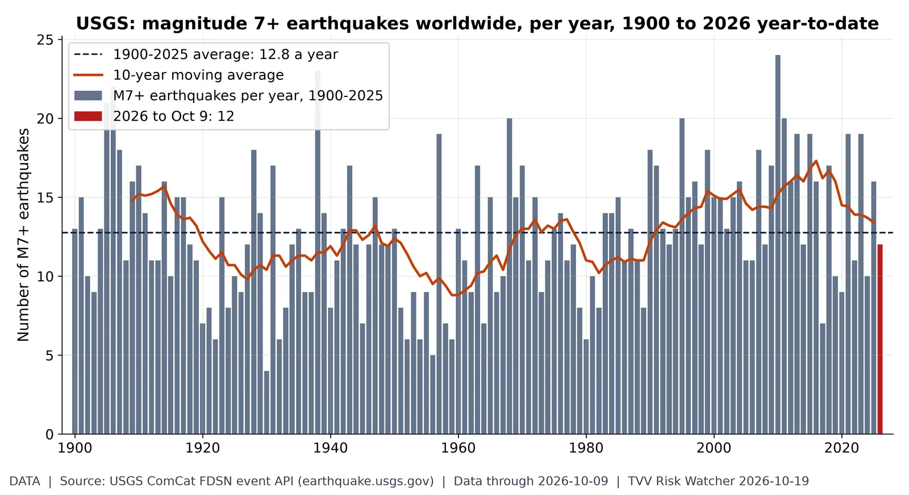
Big quakes: no trend, just clusters. USGS lists 12 M7+ earthquakes in 2026 through Oct 9, vs 14.9 a year on average in 1996-2025 (about 12 by this date) and 12.8 since 1900; yearly counts swing widely with no long-run upward trend. Early-1900s counts are less complete. Source: https://earthquake.usgs.gov/fdsnws/event/1/
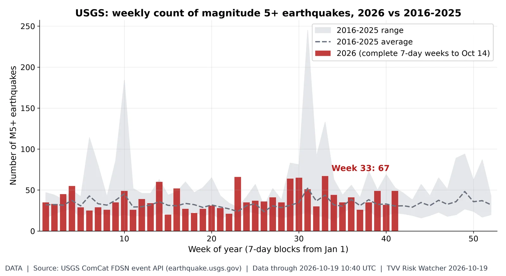
Weekly M5+ quake count. 2026 has 1,605 M5+ quakes through Oct 19 vs a 2016-25 average of 1,384 by this date (range 1,172-1,885); the busiest 2026 week was week 33 with 67. Source: https://earthquake.usgs.gov/fdsnws/event/1/
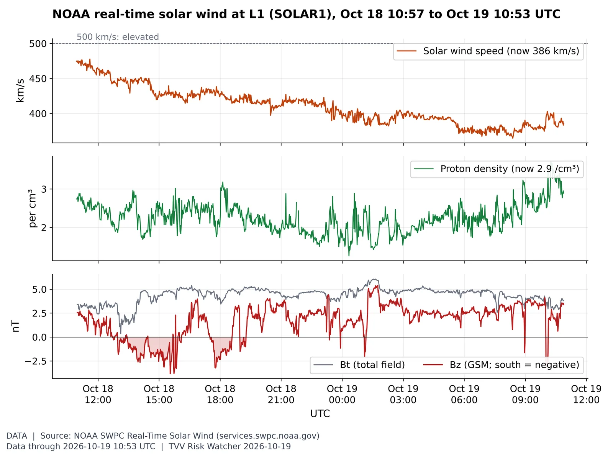
Solar wind right now. Solar wind is 386 km/s (24-hour range 365-478) and Bz is +3.4 nT (24-hour low -3.8 nT), with NOAA forecasting a peak Kp of 4.67 on Oct 20 (forecast issued 2026 Oct 19 0030 UTC). Source: https://www.swpc.noaa.gov/products/real-time-solar-wind
Layoff gauge. State initial jobless claims (not seasonally adjusted, summed from DOL state reports) were 191,033 in the week ending Oct 10, up from 170,732 a week earlier and vs 210,105 in the same week of 2025. Source: https://oui.doleta.gov/unemploy/claims.asp
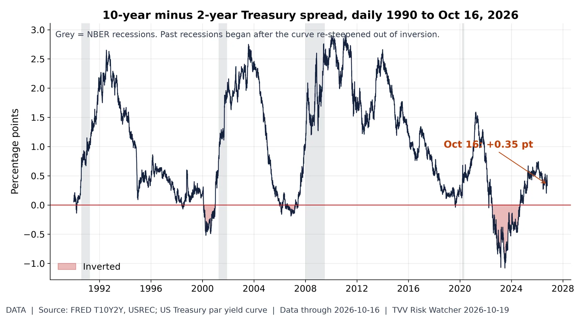
Yield curve after inversion. The 10Y-2Y spread is back positive at +0.35 after the 2022-24 inversion (Treasury: 10Y 5.09%, 2Y 4.74% Oct 16), the un-inversion phase that preceded past recessions. Source: https://fred.stlouisfed.org/series/T10Y2Y
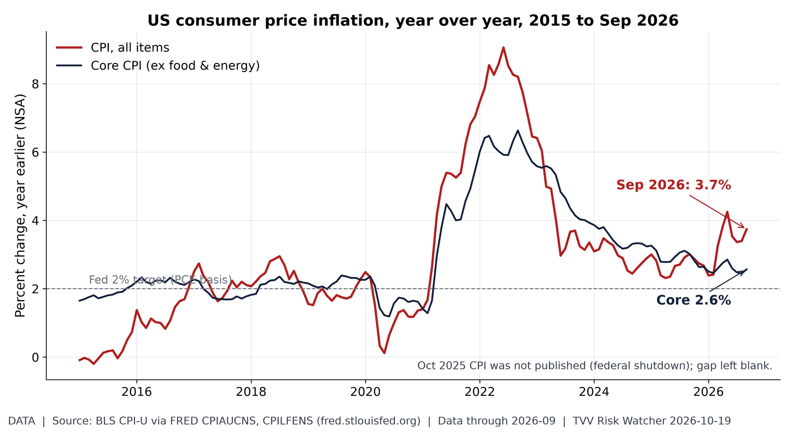
Energy-driven inflation re-acceleration. Headline CPI jumped to 3.7% in September while core sat at 2.6%: an energy-led shock pushing the Fed toward hikes. Source: https://fred.stlouisfed.org/series/CPIAUCNS
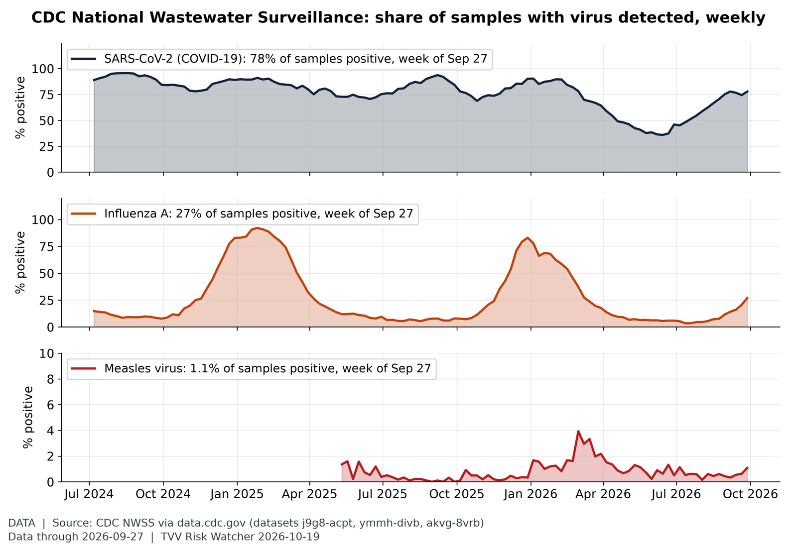
What the sewers say. In the week of Sep 27, CDC wastewater samples tested positive for SARS-CoV-2 in 78%, influenza A in 27% and measles in 1.1% (vs a 3.9% measles peak since Jan 2025). Detection share, not case counts; the latest two weeks are omitted while labs report. Source: https://data.cdc.gov/Public-Health-Surveillance/CDC-Wastewater-Data-for-SARS-CoV-2/j9g8-acpt
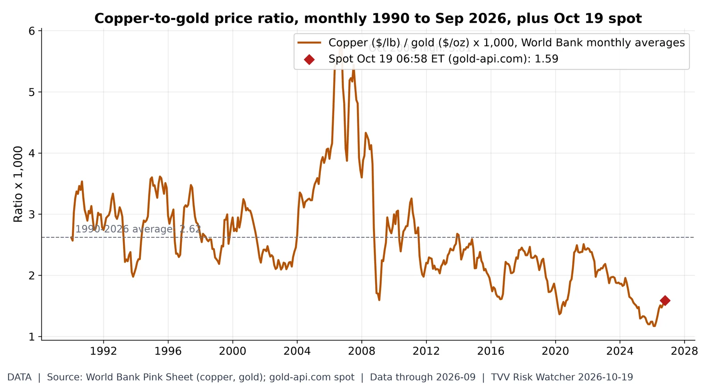
Growth metal vs fear metal. The copper-to-gold ratio is 1.59 at the Oct 19 spot (copper $6.62/lb, gold $4,170/oz), vs 1.52 in September, a 1990-2026 average of 2.62 and a 1990-2026 low of 1.17 (Feb 2026): gold has far outrun copper. Source: https://www.worldbank.org/en/research/commodity-markets
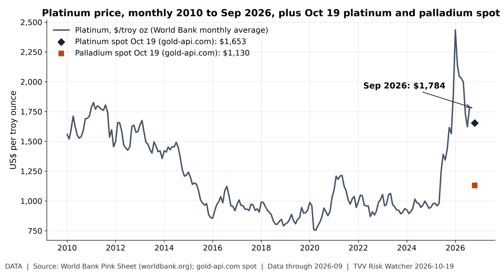
Platinum group metals. Platinum averaged $1,784/oz in September (2010-26 high $2,434, Jan 2026); Monday pre-market spot quotes are platinum $1,653 and palladium $1,130. Source: https://www.worldbank.org/en/research/commodity-markets
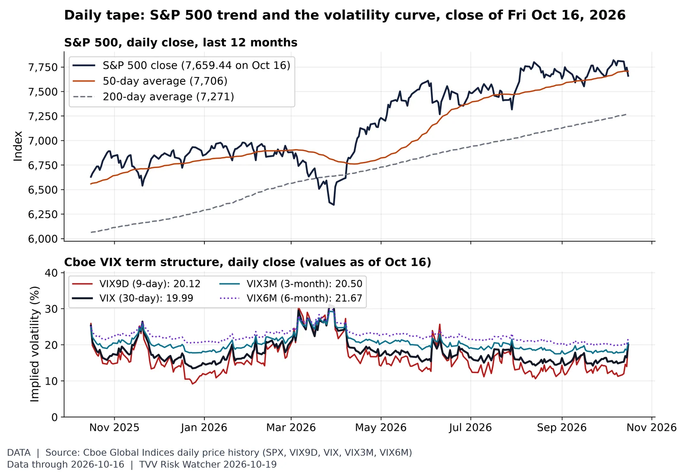
Daily tape: trend and fear curve. The S&P 500 closed at 7,659.44 on Oct 16 (-1.09% on the day, -2.0% from its 12-month closing high), above its 200-day average; VIX9D 20.12 vs VIX 19.99 vs VIX3M 20.50 (upward sloping: no near-term panic priced). Monday's close was not yet available at 7 AM ET. Source: https://www.cboe.com/tradable_products/vix/term_structure/
Gulf ceasefire odds. Polymarket traders put 79.5% on the US-Iran ceasefire holding through the midterms (7 days ago 75.5%) and 23.5% on a Saudi-Houthi ceasefire deal by Dec 31 (7 days ago 24.5%), as of Oct 19 06:59 ET. Source: https://polymarket.com/
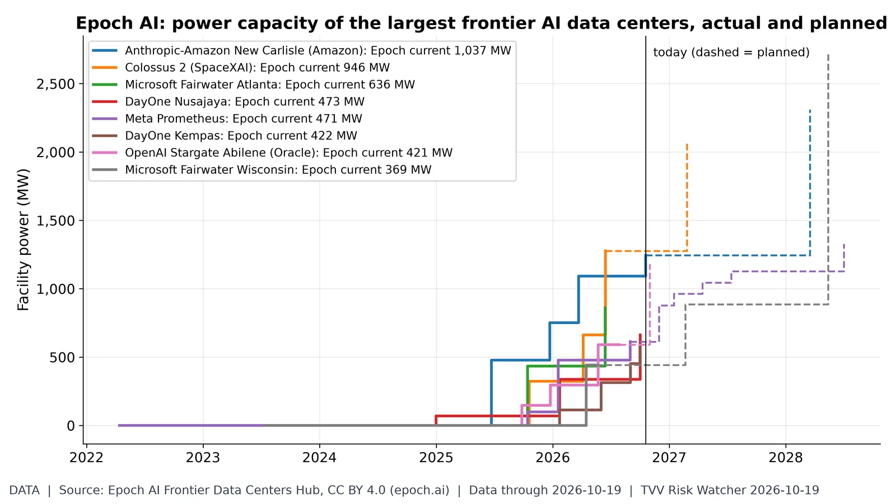
AI's power appetite. Epoch AI tracks 94 frontier AI data centers with 14.2 GW of combined current power capacity; the largest, Anthropic-Amazon New Carlisle, is at 1,037 MW, per Epoch's current-power field; timelines show build-out to date (solid) and planned expansions (dashed). Source: https://epoch.ai/data/data-centers